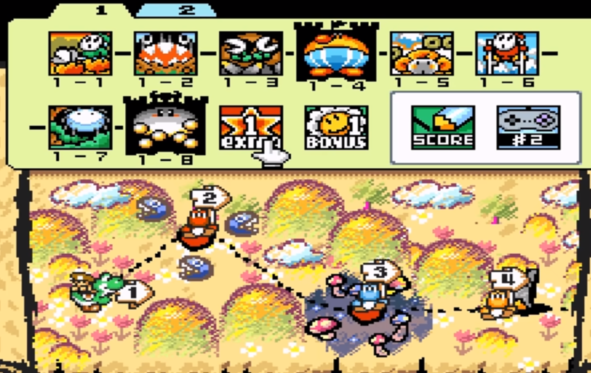
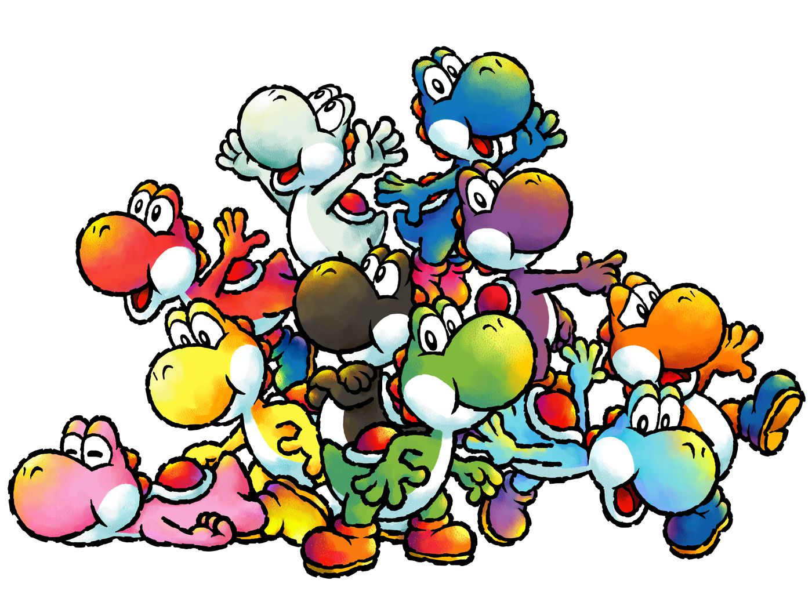
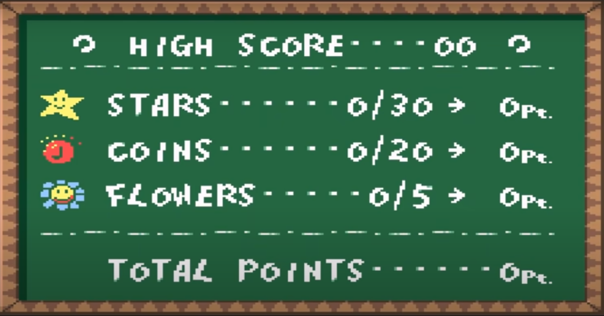
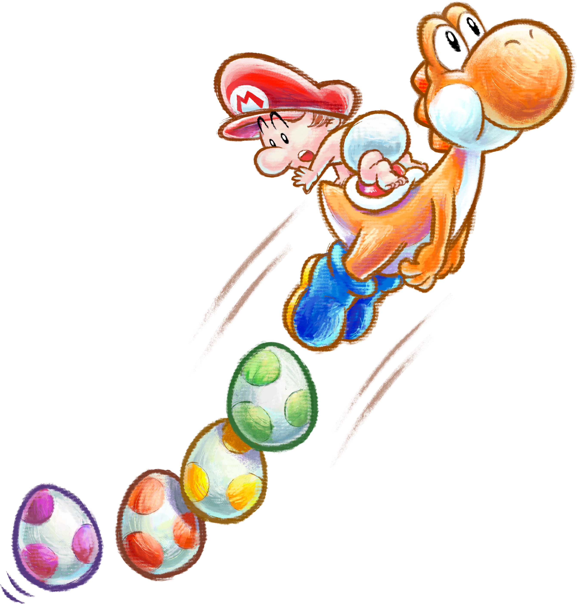
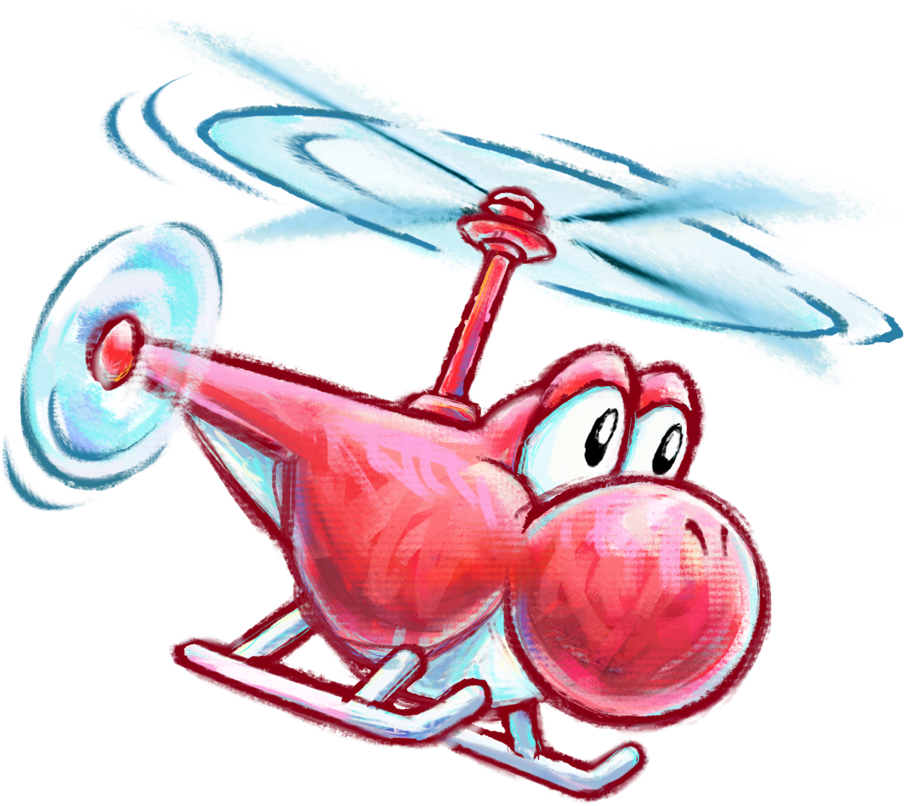
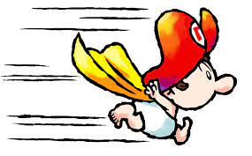

Sobre o Mapa
O jogo possui 6 mundos diferentes e cada um deles e com um yoshi diferente, cada um tem 4 fases tendo 2 fases no castelos onde te os chefes da fase
 Cada mundo tem dois extras,uma sendo para ganhar item e o outro que e so desbloqueado se você coletar todos os itens das fases. Esse extra e tipo um desafio
O itens coletaveis são:
- 20 moedas vermelhas, totalizando 20 pontos.
- 5 flores de petala brancas, totalizando 50 pontos.
- 30 estrelinhas de segundo, totalizando 30 pontos.
Tipos de ovos presentes no jogo são:
- Ovo verde: é um ovo normal.
- Ovo verde: é um ovo normal.
- Ovo vermelho: dá duas estrelas se acertar em um inimigo.
- Ovo brilhante: dá uma moeda vermelha se acertar em um inimigo.
- Ovos gigantes: transformam todos os inimigos da tela em estrelas.
Habilidades do yoshi
No jogo, o Yoshi pode engole seus inimigos e transforma em ovos podendo carregar até seis ovos de cada vez, e alguns ovos coloridos desova itens uma vez que atinge alguma coisa. Yoshi também pode comer melancias que permitem que ele possa cuspir sementes, ou inimigos flamejantes ganha a habilidade de cuspir fogo. Neste jogo o yoshi ganha uma nova habilidade o Ground Pound, que que é um ataque no qual ele pula e cai fortemente no chão.
Caso o yoshi perca o Mario, ele começará a flutuar em uma bolha e um contador de tempo começara a contagem regressiva. Se não recuperar, o Mario será levado por Koopas e dá Game Over. É possivel recolher estrelas para aumentar a quantidade de tempo no contador. Yoshi pode morrer caindo em um poço sem fundo,ser esmagado, pisar em lava.Além disso, algumas áreas ele se transforma em vários veículos, como um helicóptero ou de escavadora, o que lhe permite alcançar áreas inacessíveis durante um curto período de tempo.
O mario pode ganhar super poder de forma temporaria com o Starman em algumas áreas,assumindo o controle de Mario e por um curto período, é invencível podendo subir em paredes e tetos, e é capaz de flutuar usando sua capa.
Gameplay Yoshi Island completa:
Canal: xRavenXP